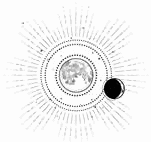

CAPÍTULO 50
Abrilis 1787
Llegar a los tanques de inundación de la isla Oeste fue casi una misión en sí misma. Tuvieron que esquivar varias patrullas de la Resistencia hasta que, al fin, encontraron un punto débil en el muro, donde Alister se encargó de abrir un boquete. Se adentraron por el hueco y se arrastraron por el agua gélida. Las crecidas de la primavera se habían adelantado y, con Lumitia a punto de alcanzar la sublimación, los afluyentes desbordados amenazaban con arrastrarlos a todos río abajo. Tuvieron que agarrarse a la pared de camino a uno de los antiguos puentes anteriores a la guerra. Había sufrido muchos estragos y se mecía peligrosamente. Cuando Helena lo cruzó a cuatro patas, sin atreverse a mirar el abismo de aguas frías y arremolinadas que rugía debajo, el puente parecía a punto de venirse abajo.
Y todo empeoró cuando estuvieron al otro lado. Los tanques de inundación eran huecos de gran envergadura diseñados para contener millones de litros de agua y redirigirla hacia el río, y estaban empezando a llenarse. El agua alcanzaba ya la mitad de la altura de la reja que daba paso a uno de ellos, y estaba fabricada en hierro, por lo que tardaron un buen rato en abrirla. Cuando lo lograron, descubrieron que se asomaba a una caída aterradora: ni siquiera con las antorchas eléctricas veían el fondo. De la oscuridad solo emergía el rugido del agua.
Los demás no se inmutaron. Tenían experiencia en combate y estaban acostumbrados a atravesar el subsuelo de la ciudad, así como a subir y descender varios pisos en rapel. Las armaduras contaban con arneses incorporados y, además, disponían de carretes de cable y ganchos para sujetarse.
Penny, exploradora de reconocimiento, fue la primera en bajar. Se movió con una rapidez asombrosa. Unos segundos después, cuando estuvo anclada a la pared, se zambulló de cabeza en la oscuridad sin volver la vista atrás. No sucedió nada en el primer minuto, pero después los cables se tensaron y se relajaron de nuevo. Era como si vibraran a intervalos. Alister los tocó con los dedos.
—Despejado —anunció, y tensó los cables para enviar la señal a Penny, que esperaba abajo.
Liberaron los anclajes, que se deslizaron en la oscuridad como serpientes metálicas, y los demás comenzaron a descender. Helena y Purnell, sin armadura ni arnés, se convirtieron en un peso muerto en el sentido más literal. Alister descendió con Helena enganchada a él, y Sebastian hizo lo mismo con Purnell. El agua les golpeaba como si estuvieran bajo una catarata, por lo que cuando llegaron al fondo estaban empapados hasta los huesos y totalmente entumecidos. No se oía más que el estruendo del agua al caer, resonando en los muros con una violencia ensordecedora.
Alister estaba temblando de frío, aunque se arrodilló y sumergió las manos en el agua durante unos minutos.
—Hay poca profundidad en los bordes, pero a unos tres metros a la izquierda hay un socavón por donde el agua va mucho más rápido. No toco fondo. —Tenía que gritar para hacerse oír—. Si seguimos recto, no habrá problema, pero será mejor que anclemos un cable antes de cruzar. Yo iré primero; sé por dónde es más seguro.
Cuando llegaron a la pared opuesta, subieron por una escalera que los llevó a una galería superior que discurría por encima de los enormes tanques de inundación. Helena empleó la vivemancia para calentar a todo el equipo, pero no pudo hacer nada con la ropa empapada. Debían seguir moviéndose.
Penny tomó la delantera. Se había aprendido de memoria todos los túneles, cada recodo. Cojeaba levemente a causa de una lesión anterior, y aun así se movía con rapidez y ligereza. Avanzó siguiendo la ruta establecida, asegurándose de que estaba despejada. Después les indicó a los demás que la siguieran con un movimiento de la antorcha.
No se toparon con un solo necrómata.
El miedo de Helena fue en aumento.
Subieron una escalera interminable que conectaba con otro túnel y, después de arrastrarse durante un buen rato, empezó a preguntarse si volvería a ver la luz del día. Pero finalmente desembocaron en un sótano.
—Esperad aquí —ordenó Soren.
Penny se apoyó contra la pared. Respiraba con dificultad, encorvada, con una mano sobre la rodilla.
—Déjame ver —dijo Helena. La chica había sufrido un desgarro en el ligamento y lo habían tratado, pero debería haber reposado en cama unos cuantos días antes de incorporarse paulatinamente al servicio activo.
—Estoy bien. Me lo arreglarán cuando volvamos —replicó Penny, aunque Helena sabía que no era verdad.
Oyeron un grito amortiguado, seguido de un chasquido metálico y un golpe sordo. Un instante después, la cabeza de Soren se asomó a la puerta del sótano donde aguardaban.
—Despejado —anunció en voz baja.
Ascendieron tres plantas. Helena nunca había visto en acción al batallón de Luc, solo durante las prácticas. Eran letales. Apenas distinguía destellos de acero y sangre derramada. Las armas se transformaban en sus manos como si fueran líquidas; retorcían y alteraban las hojas de metal para acabar con todo lo que se les pusiera por delante. Además, usaban los arneses para atacar de maneras que desafiaban a la gravedad.
No cabía duda de que la prisión estaba en funcionamiento. Había demasiados guardias y necrómatas como para considerarla abandonada, pero no tantos como cabría esperar si tenían a Luc prisionero.
Helena no dejaba de repetirse que aquello no era una trampa, pero en realidad así lo creía. Registraron todas las habitaciones; se movían rápido para evitar que alguien descubriera a las víctimas y diera la alarma. No tenía sentido esconder los cadáveres, por lo que Soren iba dejando un reguero de sangre a su paso.
Alister se encargaba de la defensa. Tenía un alcance de resonancia espectacular. Podía hacer volar una pared o derribar a los enemigos con una simple vibración del suelo. Solía quedarse atrás, cubriendo a Sebastian y Soren, mientras estos eliminaban de forma sistemática a sus objetivos en los estrechos túneles.
Cuando Penny terminó su tarea de explorar, se dedicó a cubrirle las espaldas a Alister y a protegerlo de los posibles ataques.
Revisaron todas las habitaciones, todas las celdas. No había ni rastro de Luc ni de otros prisioneros. Parecía que aquel sitio estaba vacío, y sin embargo había guardias.
Al final, encontraron a un prisionero en la última celda del módulo: una persona encogida bajo una manta.
—¿Luc? —La voz de Soren sonaba rota por la desesperación.
La persona que estaba tumbada en el catre se removió. Asomó la cabeza un hombre de cabello canoso. En cuanto los vio, abrió los ojos de par en par y se abalanzó contra los barrotes, farfullando en un dialecto norteño apenas inteligible.
—¿Resistencia?
Eso fue lo único que Helena entendió de todas las palabras que dijo. Parecía del Oeste.
—¿Salvar? —El hombre se señaló a sí mismo.
—No —respondió Soren sacudiendo la cabeza—. Estamos buscando a otra persona.
—Salvar. —Volvió a señalarse a sí mismo.
—Hemos venido a por otra persona —insistió Soren, y se giró para marcharse.
El hombre entornó los ojos.
—¿El chico? —Se tocó el pelo—. ¿Dorado?
Todos se volvieron hacia él.
—¿Está aquí? —preguntó Helena.
El hombre tensó la mandíbula.
—Salvar. —Volvió a señalarse.
—No tenemos tiempo de llevarnos a un prisionero —repuso Soren—. Ya lo encontraremos nosotros.
—¡No! —El hombre parecía aterrorizado.
Helena lo miró atentamente.
—¿Cómo te llamas?
—Vagner —respondió el hombre.
Le sonaba de algo… Vagner.
¿Wagner? Ese era el nombre que le habían sonsacado Crowther e Ivy a Lancaster cuando lo torturaron. Se giró hacia Soren.
—Hemos estado buscando a este hombre.
—Helena. —Soren la miró exasperado—. No podemos cargar con un prisionero.
—Este es importante. Crowther ha contratado a gente para encontrarlo. Si aquí es donde encarcelan a quienes no quieren que nadie encuentre, es porque el prisionero sabe algo.
Soren vaciló.
—Si nos retrasa o pone en riesgo la misión, lo mataré y no me lo impedirás. ¿Está claro?
Helena asintió.
Luc no estaba en esa planta. Subieron un piso más. Cada vez albergaban menos esperanza. Tal vez todos esos guardias estuvieran allí por Wagner, que los seguía acobardado detrás de Helena y de Purnell, como si las estuviera usando de escudo humano.
Al doblar una esquina, se toparon con un necrómata alto y macilento que estaba plantado delante de una puerta. Sonrió.
Aquello les indicó que no se trataba de un necrómata, sino de un liche.
—Aquí estáis —ronroneó con voz áspera. Levantó una lanza enorme con una mano y con la otra tamborileó una advertencia sobre la puerta—. Me preguntaba si aparecerían los Bayard que aún quedáis. Nos hemos cargado a dos, así que solo nos quedan otros dos. —No le prestaba atención a Soren mientras hablaba, solamente miraba a Sebastian—. Tu sobrina sonó como una calabaza podrida cuando la apuñalé. Deberías haber visto lo rápido que vuestro principado soltó la espada cuando me la cargué.
Sebastian sujetó a Soren.
—¿Quién eres?
El liche volvió a sonreír; los labios hinchados del cadáver se estiraron en una sonrisa putrefacta.
—¿No me reconoces, Sebastian? Pensé que lo harías después de todo el empeño que os pusisteis Apollo y tú en ejecutarme. Me temo que no funcionó. Al contrario que el hacha que le clavé a tu hermano en el cráneo.
—Atreus —sentenció Sebastian en voz baja, pero agarró el arma con más fuerza.
Helena lo observó horrorizada. ¿El padre de Kaine seguía vivo?
Antes de que pudiera procesar la información, los dos paladines se lanzaron al ataque y Atreus se abalanzó sobre ellos. La pared estalló; baldosas y piedras volaron por el aire, levantando una nube de polvo que lo cubrió todo. La galería era estrecha, un espacio de combate reducido donde la velocidad era más valiosa que el tamaño y la fuerza. Si Atreus conseguía acertar un golpe, mataría a Sebastian y a Soren, pero primero debía tenerlos al alcance. Los Bayard eran más rápidos y lo acribillaron a cortes antes de que Atreus pudiera levantar la lanza y coger impulso.
Otra pared estalló cuando Atreus blandió su arma de nuevo.
El aire estaba tan cargado de polvo que apenas se distinguía nada salvo el fulgor del metal. Se oyó un crujido espantoso y algo surcó los escombros y cayó al suelo: era la cabeza del liche.
—Vamos —bramó Soren entre el polvo sofocante. Los demás se pusieron en marcha. Soren empleaba más el brazo derecho y Sebastian estaba sangrando por una herida en la sien, pero ambos estaban ilesos. El enorme cadáver que había albergado el alma de Atreus Ferron yacía a sus pies, cubierto de tajos profundos que habrían matado a cualquiera que no estuviera ya muerto.
—¿No deberíamos sacarle el talismán? —preguntó Helena cuando todos pasaron por encima del cuerpo.
—No tenemos tiempo de hurgar en un cadáver tan grande —respondió Soren, que caminó a trompicones y abrió la puerta de un empujón.
Allí estaba Luc.
Todos se quedaron paralizados.
Estaba atado a una camilla y tenía una mascarilla sobre la nariz y la boca conectada con varios tubos. A su alrededor había un grupo de personas con batas médicas.
Luc estaba abierto en canal, y su torso había sido plegado hacia atrás para dejar a la vista todos los órganos, negros y gangrenosos.
—¡Mierda! —exclamó una mujer en cuanto vio al batallón.
Era evidente que todavía no habían terminado lo que estuvieran haciendo cuando Atreus los alertó.
Dos personas salieron corriendo por una puerta que había al fondo. Dejaron allí a los demás a su suerte, sin tan siquiera mirar atrás.
El quirófano se sumió en la violencia.
Soren se había preparado para este momento. Recorrió la sala y transformó su arma en una hoja larga y curvada. Asesinó a todos los presentes con agresividad. No fueron muertes rápidas ni limpias. Helena notó que le caían chorros de sangre cuando se acercó a Luc.
Además de estar atado, le habían perforado las manos con unas púas de anulitio que Helena reconoció de inmediato por cómo el material se disolvía lentamente en su sangre. Le buscó el pulso con manos temblorosas, aunque no estaba segura de que fuera a funcionarle la resonancia. Colocó dos dedos por debajo de la mandíbula de Luc y se le escapó un sollozo de alivio. Estaba vivo. Anestesiado y abierto en canal, pero vivo.
Le arrancó la mascarilla de la cara y Purnell giró un botón de la bombona para cortar lo que le estuvieran suministrando.
¿Qué le habían hecho?
Helena palpó con las manos, por si le habían metido un talismán, si bien no encontró restos de lumitio ni de ningún otro metal. Tenía los órganos negros, como si lo hubieran envenenado, pero no había tiempo de curarlo de verdad.
Helena cerró las incisiones con todo el cuidado del que fue capaz, dejándolo todo en su sitio. Purnell estaba examinando las púas que tenía clavadas en las manos y no dejaba de jadear entrecortadamente mientras trataba de quitárselas. Su expresión era de un terror absoluto.
Helena se percató de que las venas y las arterias de los brazos de Luc estaban obstruidas y que el corazón le latía demasiado lento por culpa del gas que le habían administrado. Aquello había silenciado su resonancia para que los científicos que acababan de morir pudieran emplear la suya propia. El principado no estaba del todo inconsciente, pero tampoco despierto.
Soren y Alister estaban intentando abrir la puerta por la que habían escapado los dos científicos, pero no lo conseguían.
Helena trabajó lo más rápido que pudo y, cuando Purnell por fin le sacó las púas, aceleró el metabolismo de Luc para obligar a los riñones a ponerse en marcha y al corazón a latir con más fuerza. También le dio un frasco a la chica para que le lavara las heridas y así poder vendarlas luego.
Entonces sintió que su anillo ardía.
Empezó a dolerle la mano izquierda. Se le escapó un grito ahogado, pero siguió trabajando. Apenas había desaparecido el calor cuando volvió a encenderse.
—¿Está vivo? —escuchó que decía Soren con voz trémula.
—Sí, dame un minuto —respondió, tocándole la cara con desesperación—. Vamos, Luc. ¿Me oyes?
El anillo volvió a calentarse.
Entonces sonaron las alarmas, un pitido ensordecedor que lo inundó todo.
—¡Tenemos que irnos! —gritó Soren por encima del escándalo—. Joder, lo llevaremos en brazos.
—Luc, despierta. —La chica lo zarandeó.
Pero Luc pesaba demasiado. No podrían moverlo así. Helena y Purnell no conseguirían sacarlo de allí a rastras si había alguna pelea.
Helena sacó un frasco y una jeringuilla, y la rellenó con manos temblorosas. Nunca había usado esa combinación: epinefrina, calmantes y otras sustancias que activarían su cuerpo. Si era demasiado potente, lo mataría. Y todo habría sido en vano.
—Vamos… —masculló clavándosela en el pecho, junto al corazón.
Al instante, Luc se incorporó y aspiró una bocanada de aire. Su cuerpo recobró la movilidad con una sacudida violenta. Helena vislumbró el azul cielo de sus ojos.
—¿Hel? —gimió con voz áspera. Estiró la mano vendada para tocarle la cara, como si no creyese que fuera real.
—Sí —confirmó ella, conteniendo las lágrimas—. Hemos venido para llevarte a casa.
El principado miró a su alrededor, intentando reconocer a quienes estaban en el quirófano.
—¿Dónde… dónde está Lila?
—En el Cuartel General —respondió Soren con cierta brusquedad—, esperándote.
Luc se puso en tensión.
—¿Pero está…?
—Está viva —se apresuró a decir Helena—. La hemos sanado. Ahora te toca a ti. Tenemos que irnos.
A Luc se le escapó un suspiro de alivio.
—Me dijeron que si los acompañaba… no la matarían. Estaba… sangrando… tanto. No pude detener la hemorragia ni con fuego. ¿Está… está bien?
—Está viva, y recuperándose —respondió Helena—. Venga, coge esto. Tenemos que irnos.
Lo ayudó a incorporarse, pero Luc gimió y se llevó una mano al pecho.
—¿Qué me han hecho?
—No lo sé. Lo arreglaré cuando estemos a salvo —contestó la chica. Partió una pastilla por la mitad y se la introdujo en la boca. Solo podía rezar para que su cuerpo aguantara todo lo que le estaba suministrando—. Estate quieto.
Colocó ambas manos a los lados de su cuello y usó la pastilla para reajustar su fisiología y para asegurarse de que sus órganos funcionaran tal como debían. Cuando se le pasara el efecto, se derrumbaría por completo, pero Helena estaría con él. Lo solucionaría todo en cuanto estuvieran a salvo.
—Levanta —le ordenó. Luc estaba respirando demasiado rápido, y ella se percató de que el corazón le latía a una velocidad peligrosa. Trató de ralentizarlo, pero conforme recobraba el conocimiento era más consciente del peligro.
Helena se pasó uno de sus brazos por encima del hombro y Purnell hizo lo mismo por el otro lado. Tendrían que sacarlo a rastras.
—Has venido… —dijo Luc dejándose caer con pesadez.
—Eres mi mejor amigo —replicó Helena con la vista al frente—. Claro que he venido. Venga, tenemos que salir de aquí.
Luc no paraba de tropezarse con sus propios pies y su cuerpo presionaba con tanta fuerza que sus rodillas casi se doblaron. Agradeció que no llevase armadura, porque de haber sido así no lo habrían conseguido. El suelo resbalaba por la sangre y las vísceras.
—No deberías estar aquí. No tienes… formación —dijo cuando estaban a la mitad de las escaleras.
—Me formaron para ayudarte —repuso Helena.
El anillo no dejaba de arder. Una y otra vez. Lo ignoró.
Temía que, después de todo lo que habían combatido para llegar hasta allí, Soren y los demás estuvieran demasiado agotados para seguir peleando, pero ver a Luc les había dado fuerzas.
Por muy secreta que hubiera sido la prisión, una vez que se activó la alarma empezaron a salir numerosos necrómatas. No se trataba de los necrómatas lamentables y putrefactos que arrastraban los pies y se deterioraban rápidamente; a estos necrómatas los había reanimado una persona experta, y apenas se notaba que estaban muertos, salvo por el hecho de que seguían luchando a pesar de los golpes que recibían de Soren y Sebastian. La estrechez de los pasillos y lo anguloso de su recorrido eran a la vez una ventaja y una trampa.
—Necesito un arma —dijo Luc, e intentó apartar a Helena cuando Soren acabó estampado contra la pared y se derrumbó en el suelo. Un necrómata quiso arrancarle la cabeza, pero Sebastian lo apuñaló. Así ganó algo de tiempo para que Soren se incorporara y lo decapitara.
Estaba luchando con la mano izquierda; el brazo derecho lo mantenía pegado al cuerpo.
La medicación estaba surtiendo efecto. Luc había recuperado la fuerza suficiente como para resistirse a Helena, que pretendía sujetarlo, y también era consciente de que los enemigos los superaban en número. Aun así, Helena trató de detenerlo.
—Luc, estás herido. Ni siquiera estoy segura de cuánto. Simplemente no sientes el dolor.
—No voy a quedarme de brazos cruzados viendo cómo los matan. —Intentó zafarse de ella y de Purnell, pero Helena le clavó los dedos en los brazos.
—Luc, no tienes resonancia.
—Pues ya me curarás luego —replicó y, al final, se libró de ambas y se lanzó a la batalla. Le propinó una patada a un necrómata con tanta fuerza que le atravesó el pecho. Después, le arrebató la espada.
Soren lo llamó varias veces, pero no pudo más que maldecir, ya que no dejaban de abalanzarse sobre él.
Helena desenvainó una de sus dagas cuando llegaron al sótano. Wagner seguía encogido detrás de Purnell, como si creyera que la chica podría protegerlo. Purnell tenía los ojos desencajados y la mirada perdida por el pánico. No deberían haberla traído. Estaba desmoronándose, no era capaz de resistir la guerra.
Se metieron en el sótano y cerraron la puerta, pero apenas habían girado la llave cuando la pared se hizo trizas. Huyeron por los túneles, arrastrándose uno tras otro por el alcantarillado en dirección a los tanques de inundación. Alister se colocó en la retaguardia y echó abajo los túneles conforme pasaban, paso a paso, para dificultar la persecución.
Cuando llegaron a uno de los túneles principales, se detuvieron a tomar aliento.
—No deberías estar luchando, idiota —le espetó Soren, desplomado contra una pared. A la luz de las antorchas, se le veía muy gris. Tenía la nariz partida y la sangre le corría por la boca y la barbilla.
Purnell estaba encogida en el suelo, meciéndose.
—¿Mami? Mamá, por favor, no lo hagas —musitaba una y otra vez.
—No me digas lo que tengo que hacer —replicó Luc, que respiraba entrecortadamente. Agarró la espada con la otra mano—. Esta espada es una mierda. Podrías haberme traído algún arma. ¿Tenéis mis anillos al menos?
—No tienes resonancia —le espetó Helena.
Luc torció el gesto, pero aferró la espada con más fuerza.
—Me parece increíble que Lila no te haya matado todavía —comentó Soren mientras lograba incorporarse. Se sostenía a duras penas, tambaleante.
—Espera. —Helena se acercó y lo revisó. Tenía el brazo roto otra vez, eran ya tres veces en el mismo año. Lo más probable era que esta vez no se le curara del todo. Le colocó los huesos en su sitio y los soldó.
—¿Tienes algo para el dolor? —preguntó Penny en voz baja—. También me sirve si puedes seccionar algún nervio.
Cuando hubo terminado con Penny, obligó a todo el equipo a tomarse sus tónicos regenerativos. Quería asegurarse de que todos estaban en condiciones de asimilar la sanación si la necesitaban. Había traído dos para cada uno, pero no había contado con un prisionero extra. Wagner se bebió el suyo mientras repartía el resto.
—Tenemos que ponernos en marcha —afirmó Soren. Tuvieron que arrastrar a Purnell con ellos, porque seguía en estado catatónico y tenía la mirada perdida, como si no supiera quién era, y no dejaba de llamar a su madre con una voz infantil y escalofriante.
Regresaron mientras desandaban sus pasos por la maraña de túneles hasta que llegaron al punto por donde habían entrado. Al principio, sintieron alivio al comprobar que nadie los seguía, pero conforme se acercaban les parecía muy extraño.
El anillo de Helena volvió a arder.
—Que Sol nos ampare. ¡Es Blackthorne! —exclamó Penny con la voz estrangulada por el miedo en cuanto doblaron una esquina.
En las partes bajas de los tanques de inundación se extendía una horda de necrómatas, acompañados por un buen número de aspirantes mortales. Permanecían en formación y les bloqueaban el paso por completo.
—¡Atrás! —ordenó Soren al instante, pero nada más pronunciar la palabra se oyó un chirrido de metal a sus espaldas, seguido de un rugido monstruoso.
Quimeras.
Estaban atrapados.
Blackthorne estaba al frente y no llevaba armadura.
—Capturad a Holdfast y matad al resto. ¡Así conseguiréis la inmortalidad!
Los aspirantes rugieron desesperados, mientras que los necrómatas permanecieron inmóviles, a la espera.
—Manteneos cerca —dijo Luc, que se colocó hombro con hombro entre Soren y Sebastian.
—Tenemos que llegar al otro lado —indicó Soren.
El plan, si es que se podía llamar así, había fracasado. No podrían escapar con Luc si el principado se empeñaba en luchar. Los dedos de Helena buscaron las dagas.
Cuando la primera oleada de necrómatas cayó sobre ellos, el grupo se dividió como un barco a la deriva.
Varios necrómatas se lanzaron contra Helena. No tuvo tiempo de pensar. Se movió por puro instinto: esquivó, bloqueó, apuñaló y transformó la daga para que dañara las articulaciones esenciales. Con la mano que le quedaba libre, cercenó la reanimación de los cadáveres.
La energía la golpeó con violencia, fue como una detonación. Perdió el equilibrio, pero los necrómatas que había cerca acabaron pulverizados. En alguna parte había luz, fuego, antorchas que se reflejaban en el agua pútrida que ya les llegaba hasta las rodillas. El sonido era ensordecedor: el rugido y el caos impedían los sentidos. Helena buscó a los demás, pero le resultó imposible distinguirlos en medio de la multitud. Había demasiados cuerpos, vivos y muertos, que se movían en la oscuridad. Kaine la había enseñado a defenderse para escapar, no a luchar en una refriega como esa. Intentó concentrarse en su resonancia, pero había tantos cadáveres, tantos movimientos y tantas armas que empezaba a marearse. Esquivó una porra que venía directa a por ella y respondió con un tajo de su cuchillo. La hoja vibró con resonancia cuando atravesó la piel cerosa y putrefacta, del torso a la garganta hasta hundirse en el cerebro, rajando huesos como si fueran mantequilla.
Con un movimiento de resonancia, la hoja se curvó y cercenó la cabeza del necrómata de forma limpia.
Algo chocó con ella y la hizo tropezar. Una mano caliente impidió que cayera al suelo. «Será un aliado», pensó. Pero entonces vio un guantelete de acero que empuñaba una espada y la dirigía hacia su cabeza. Helena levantó la daga, justo a tiempo para esquivar el golpe con la empuñadura y, acto seguido, la hundió en la clavícula del adversario. Haciendo uso de la resonancia, estrechó la hoja todo lo que pudo hasta que el metal la avisó de que había atravesado la carne. Cuando la tuvo metida hasta la empuñadura, hizo que la hoja se extendiera y la sacó de un tirón. Helena sintió que la sangre cálida y espesa le manchaba la mano y, un segundo después, el guantelete le soltó el hombro. La espada cayó a varios centímetros de su cabeza, y el aspirante se desplomó encima de ella.
Los dos cayeron al agua. Helena sintió el frío como si fuera una patada en las costillas. Intentó incorporarse para librarse del cadáver que estaba a punto de asfixiarla.
Blandió el arma a ciegas: el agua, el ruido y la desorientación le hacían imposible percibir nada más.
Gateó para alejarse del tumulto hasta que encontró una pared y logró ponerse en pie. Trató de recobrar el aliento mientras buscaba a los demás en los intervalos de luz que despejaban las sombras. Se oían unos gritos que no cesaban. Era Purnell, que había superado la congoja y ahora chillaba a pleno pulmón. Los gritos rebotaban en los muros y llamaban la atención. Un grupo de necrómatas avanzaba hacia ella.
Wagner, que estaba al lado de Purnell, la empujó hacia ellos y trató de escapar. Al caer al suelo, la chica pareció recobrar la lucidez, pero entonces comprobó con horror lo que estaba pasando.
No tenía armas, pero reaccionó rápido. Saltó y, de alguna forma, esquivó las manos que se le echaban encima. Corrió hacia el centro del túnel, que estaba inundado de sangre.
Apenas había dado unos pasos cuando desapareció bajo el agua.
Helena lo vio todo y rezó para que volviera a salir a la superficie, para que escapase de la corriente. Sin embargo, justo entonces, algo golpeó a Helena y la hizo caer de costado. Sintió una bota aplastándole su muñeca y se atragantó con el agua al proferir un grito ahogado.
Un dolor abrasador le atravesó las costillas.
Retrocedió a gatas hasta la pared. Tenía la ropa congelada y pegada a la piel. Se giró buscando a sus compañeros, aunque no dejaba de toser agua.
No sabía cómo, pero Wagner había logrado llegar a la pared contraria y ahora blandía una lanza con la que combatía a los necrómatas.
Luc y Sebastian luchaban juntos en el centro de la horda, mientras que Soren se había separado y estaba intentando alcanzar a Alister y Penny, que estaban acorralados, lejos de todo el mundo.
Las luces parpadeaban sin parar sobre el agua, por lo que solo se veían destellos fragmentados de la acción. Las quimeras habían llegado. Helena vio de reojo unos colmillos afilados y unas garras mientras Alister intentaba levantar un muro improvisado. Penny soltó un grito desesperado cuando clavó su arma en el hombro de una quimera y el monstruo la arrastró consigo.
Soren atravesó el agua con gran rapidez, transformando su arma sobre la marcha, tratando de llegar antes de que las quimeras se les echaran encima.
Un hacha surcó el aire y estuvo a punto de clavarse en su pierna.
El joven se detuvo, dando un traspié en el agua, y se giró bruscamente para buscar a su atacante. La guadaña que tenía en la mano esquivó un golpe de milagro, aunque estuvo a punto de perder el equilibrio. Ahora ya sabía a quién se enfrentaba: Blackthorne le impedía el paso.
El inmarcesible, consciente de la desventaja de su contrincante, atacaba siempre a su derecha y dirigía todos los golpes al punto ciego de Soren. Lo estaba agotando.
—¡Soren! —gritó Luc de repente.
Soren se giró en el mismo momento en el que una quimera se lanzaba a por él. La decapitó de un movimiento certero.
Se oyó un sonido terrible, parecido a un crujido húmedo.
Aprovechando que Soren se había vuelto, Blackthorne le había atacado por la derecha. Tenía la cabeza del hacha enterrada entre las costillas y le sobresalía por la espalda.
Blackthorne retiró el hacha y le dio un lametazo a la hoja mientras observaba a Soren caer y desaparecer bajo el agua.
Todo ocurrió muy deprisa.
Luc empezó a chillar, pero el cuerpo de Helena pareció cobrar vida de repente. Se lanzó hacia delante apuñalando todo lo que encontró a su paso, desesperada por llegar hasta donde estaba Soren antes de que la corriente se lo llevara.
Pero Luc fue más rápido. Cuando Helena llegó, él ya estaba de rodillas, sujetando a Soren en sus brazos, bañado en la sangre que escapaba del cuerpo de su amigo. Un instante después, apareció Sebastian, interponiéndose entre ellos y Blackthorne para impedirle el paso, mientras Luc permanecía arrodillado en el agua abrazando a Soren.
Cuando Helena se agachó a su lado, Luc alzó la vista.
—P-puedes curarlo, ¿verdad?
—Luc…
Pero el principado ya estaba entregándole el cuerpo de Soren. El peso hizo que Helena cayera de rodillas en el agua. Agarró al paladín con manos temblorosas, ignorando el dolor punzante que sentía en la muñeca.
—Yo te cubro —aseguró Luc cogiendo la espada. Y, sin más, se marchó.
La batalla no se había detenido por Soren.
Helena trató de aislarse de lo que sucedía a su alrededor y se concentró. Solo necesitaba encontrar un hilo de vida, así lo mantendría a salvo.
Así había mantenido a Lila con vida.
Pero la herida era demasiado profunda. Los soldados con este tipo de heridas no sobrevivían el traslado al hospital. Había recibido un golpe letal. La vida que le quedaba era frágil y se le escapaba de los dedos cada vez que intentaba usar su resonancia.
Unos dedos le acariciaron la mano.
Soren la estaba mirando fijamente.
—Recuerda nuestro trato.
Apenas escaparon esas palabras de sus labios cuando Helena sintió un estallido de energía fría y letal que atravesó su resonancia. Tenía la mente tan sensible del cansancio y estaba tan concentrada en mantenerlo con vida que se le nubló la vista cuando notó que la recorría la descarga de la muerte. Se dobló sobre sí misma y, por un instante, no fue capaz de comprender lo que había pasado. Cuando se le aclaró la vista, se encontró con la mirada vacía e inexpresiva de Soren.
Había muerto.
—No. No. No. ¡Soren!
Lo tenía en brazos; su sangre seguía manchándole la piel. Era el único calor que sentía.
Helena miró a su alrededor. Alister estaba pidiéndole a Penny que emprendiera la retirada. La chica estaba enfrentándose a las quimeras con un simple cuchillo, por lo que debía acercarse peligrosamente a ellas para darles un tajo. Un error y lo perdería todo.
Soren estaba muerto. Purnell estaba muerta.
Sebastian estaba haciendo todo lo posible para contener a Blackthorne y proteger a Luc. Luc seguía luchando, aunque distraído, con la mirada fija en Helena, que seguía arrodillada con Soren en sus brazos. Percibió la desesperación en sus ojos. La certeza de que iba a salvar a Soren porque podía hacerlo. Pero era demasiado tarde.
Ella lo miró a los ojos un instante y, después, consumida por la culpa, le dio la espalda y acercó su cuerpo al de Soren.
—Haré cualquier cosa —dijo posando una mano en su cuello—. Cueste lo que cueste.
Vertió la energía de su cuerpo para devolvérsela a Soren.
Fue demasiado fácil, casi instintivo.
Conocía a Soren, sabía lo que había sentido cuando estaba vivo.
Su resonancia recorrió el cuerpo del paladín como un torrente de agua, cerró la herida de forma limpia, cosió los tajos de los órganos seccionados y recolocó los huesos en su sitio. Sin embargo, no se detuvo ahí.
Helena sintió que la mente de Soren regresaba: una sombra, un leve atisbo de su consciencia, así que centró en eso toda su energía.
«Vuelve. Vuelve. No puedes irte todavía».
Soren parpadeó. Ella notó que había una conexión entre ambos, apenas un hilo. Lo sostuvo, incapaz de dejarlo marchar.
—Todavía no puedes descansar, tienes que proteger a Luc —afirmó, y las palabras resonaron en el interior de Soren.
Soren la reconocía, de eso estaba segura. Sabía que era una amiga. Le resultó horrible sentir aquella vida abominable entre sus brazos. A pesar de lo mucho que se había esforzado, no era más que una sombra. Soren era una marioneta y ella quien tiraba de los hilos.
Después de pasar tantos años sanando, la nigromancia le pareció fácil. No sintió dolor. Se limitó a pedirle al cuerpo de Soren que no muriera, que luchara como siempre lo había hecho. Y Soren los protegería, porque sabía cómo hacerlo.
El paladín se puso en pie y la ayudó a levantarse; ya tenía el arma en la mano.
La memoria muscular no se perdía. Era como si estuviera sonámbulo, a pesar de estar muerto.
Helena podía ver a través de sus ojos. Su consciencia iba y venía mediante la conexión que habían forjado entre ellos. Soren se giró y, al ver a Luc, la chica sintió que deseaba acercarse. Después buscó a Lila.
El principado vio que Soren se ponía en pie y, por un instante, el alivio se hizo patente en su rostro. Sin embargo, no duró mucho.
Luc lo supo. De alguna forma, lo supo nada más mirarlo.
Aun así, Soren se dirigió hacia él. Helena lo detuvo.
—Tienes que proteger a Penny y a Alister —le ordenó, en voz alta y mentalmente. Señaló hacia ellos para que dejara de prestarle atención a Luc—. Sácanos de aquí.
Soren se giró y obedeció. Helena lo observó con la mente confusa; la desorientaba esa segunda consciencia que tenía ahora en su cerebro. La suya propia no sabía adónde ir.
Una quimera se abalanzó sobre ella.
La esquivó, aunque por el rabillo del ojo vio una guadaña.
Soren.
Helena parpadeó intentando hacerse una idea de cómo estaban.
Soren mató a la quimera sin detenerse siquiera en su avance hacia Penny y Alister. Antes de volver, puso a Penny a salvo.
Percibió un movimiento a la izquierda. Helena se encogió para esquivar lo que fuera que se le acercaba, aunque no estaba segura de si estaba viendo a sus atacantes o a los de Soren. Trató de concentrarse un poco en su propia mente y se enfocó en lo que la rodeaba.
Si moría, Soren también lo haría. Tenía que permanecer con vida hasta que Luc estuviera a salvo.
Intentó bloquear los movimientos de Soren, pero estaba demasiado enraizado en su mente. Sintió un gesto a su espalda y se giró un segundo antes de que el impacto la alcanzara de lleno. El golpe le vació los pulmones de aire. Bajó la vista y, al parpadear, intercambió una consciencia con otra.
Soren. Helena. Soren.
Tenía un cuchillo clavado hasta la empuñadura en el lado derecho del pecho.
Helena.
Si se hubiera girado un segundo más tarde, le habría atravesado el corazón, pero entrecerró los ojos concentrándose y comprendió que no había provocado daños en ningún órgano vital.
El dolor fue lo único que hizo que Helena recobrara su propia consciencia.
Actuó de inmediato: le cortó la mano al necrómata que la había apuñalado y así impidió que sacara el cuchillo. Con la mano derecha sostuvo el arma en el sitio para que este no pudiera arrancarla y, acto seguido, le propinó una patada en la rodilla.
Al moverse, se le escapó un gemido de dolor y trastabilló; los bordes de la hoja se le clavaron aún más.
Una quimera cerró los colmillos alrededor de la pierna de Soren y le dejó una herida desgarradora. El paladín la decapitó sin prestar atención a la herida.
Lo estaban destrozando. Helena notaba las heridas, aunque no sintiera el dolor. Esa parte del cerebro no la había logrado reanimar.
Aun así, no dejó de luchar.
«Saca el cuchillo. Cierra la herida».
Helena se dirigió hasta una pared y se acurrucó en el agua congelada. Había otra quimera atacando a Sebastian y a Luc. Por su tamaño, debía de tener algo de oso. A Luc empezaban a fallarle las fuerzas.
La quimera era enorme. Su cuerpo era de mamífero, pero mostraba unas fauces alargadas, propias de algún reptil, y una piel tan gruesa que las armas no eran capaces de penetrarla. Chillaba con voz humana.
Helena intentó concentrarse. Se mordió el labio y se preparó para sacar el cuchillo.
No obstante, unos dedos se enredaron entre sus trenzas y obligaron a Helena a levantarse hasta que apenas rozaba el suelo con los pies.
Basilius Blackthorne le dedicó una sonrisa que dejaba ver todos los dientes. Un reguero de sangre le caía desde la boca hasta la barbilla.
Con esos dientes se había comido a su mujer y a sus hijos…
—Veo que la Llama Eterna cuenta con una nigromante —comentó con voz áspera.
Helena intentó apuñalarle el brazo con el que la agarraba, pero Blackthorne le apartó la mano con tanta fuerza que le entumeció toda la mano izquierda. La daga cayó al agua con un chapoteo.
Intentó agarrarle la muñeca, pero, en cuanto le rozó la piel con los dedos, extendió su resonancia.
Aunque Kaine siempre se lo había advertido: si los inmarcesibles descubrían lo que era, se mostrarían precavidos.
Antes de que pudiera establecer el contacto, Blackthorne se apartó con rapidez y cerró los dedos alrededor de los nudillos de la mano izquierda. No dejó de apretar con todas sus fuerzas, hasta que le partió los dedos como si fueran ramitas.
Helena chilló. El cuchillo que tenía en el pecho se movió y sintió una presión dolorosa en los pulmones.
Blackthorne contempló la mano aplastada de Helena y soltó una carcajada.
—Había olvidado que vosotros no os regeneráis.
Entonces se fijó en la mano derecha y reparó en la extraña manera en la que sujetaba el cuchillo.
—Creo que esta ya está rota, pero vamos a asegurarnos.
Con una suavidad inesperada, el inmarcesible retiró la mano de Helena de la empuñadura del cuchillo y le partió la muñeca. La chica vio puntos negros y empezó a gritar de nuevo.
—Debería mantenerte con vida —dijo mientras le sacaba el cuchillo del pecho muy lentamente, disfrutando del resplandor de la hoja.
A Helena le dolía tanto que su mente no dejaba de intercambiarse con la de Soren en busca de alguna escapatoria.
Los necrómatas lo tenían acorralado. Había acabado con las quimeras, pero eran demasiados necrómatas, decenas de muertos que lo empujaban corriente abajo y lo estaban despedazando. Uno le clavó los dientes en la pierna y le arrancó el tendón a la altura de la rodilla.
Aun así, seguía luchando. Aunque había perdido la guadaña, conservaba todavía un cuchillo. Penny gritaba tras él, pero Alister la retenía. Soren continuaba apuñalando, rompiendo y abriéndose paso a puñetazos; estaba siguiendo la orden de no dejar de luchar, a pesar de que lo estaban destrozando. Unos dedos cadavéricos le tantearon la cara hasta encontrar el ojo que le quedaba. Después, le desencajaron la mandíbula y le dejaron la garganta a la vista.
Helena se estremecía de forma inconsciente cada vez que le arrancaban una parte del cuerpo, pero el dolor no cedía. No sentía los dedos, no eran más que un faro de agonía que se extendía por los brazos.
Notó que le caía un chorro de sangre por el costado.
Creyó que Basilius volvería a apuñalarla, pero el inmarcesible soltó el cuchillo y pasó los dedos por la herida del costado. Helena notó el escozor en la piel sensible.
Entonces recorrió la puñalada que tenía entre las costillas y, sin previo aviso, introdujo dos dedos en la herida. Helena gritó al sentir que abría la piel y le doblaba los huesos desde dentro. Tenía los dedos empapados con su sangre.
—¿Sabes qué? No hay nada que me guste más que una herida —dijo sin aliento—. Están húmedas y calientes, más que cualquier otra cosa.
Helena pataleó y trató de empujarlo con sus manos rotas, y, a pesar de que notó cómo giraban sus huesos destrozados, no sirvió de nada. Gritó y gritó, pero nadie la escuchó, así que le golpeó el pecho con la cabeza hasta que Basilius le agarró la garganta con la mano que tenía libre y presionó el pulgar contra su tráquea para que se callara. Sus pulmones luchaban por encontrar aire.
—Sí, eso es —comentó con un gemido de aprobación—. No te preocupes, no dejaré que mueras. Seguirás viva cuando te entregue. Bennet estará encantado contigo.
Estaba a punto de perder el conocimiento. La vista se le nublaba. Ya no encontraba aire para seguir gritando. Apenas notó que Soren desaparecía de su mente, arrastrado por la corriente; la conexión se disolvió como la sangre en el agua.
—Un grito más. Se te da estupend…
De repente, Blackthorne trastabilló y boqueó como si alguien le hubiera vaciado los pulmones. Sus manos perdieron fuerza y los dedos se resbalaron de su cuello un segundo antes de que él arqueara la espalda.
Helena cayó como una losa. El frío gélido la devolvió a la realidad; de no haber sido así, se habría ahogado. Se acurrucó en el suelo y buscó con la mirada aterrorizada a Blackthorne. Vio que alguien lo arrastraba por el agua con un cable o una soga alrededor del cuello.
Pero la persona que lo estaba arrastrando no era miembro de la Resistencia.
Era un inmarcesible, al que reconoció de inmediato por el yelmo y el uniforme negro.
Cuando los dos estuvieron al alcance el uno del otro, Blackthorne ya se había recuperado y se abalanzó contra su atacante. Había recuperado una espada del agua y la lanzó directa a la cabeza del otro inmarcesible, aunque este consiguió esquivarla.
Blackthorne lo intentó una y otra vez. Atacaba con precisión y se movía con la destreza de un alquimista de combate experto, pero su contrincante siempre lo esquivaba. No llevaba armas, ni tampoco contratacaba. Era rápido y ligero, se deslizaba como si estuviera danzando, hasta que Blackthorne cometió un error. Fue solo un instante, pero el atacante no necesitó más.
El recién llegado evitó un golpe y, empleando sus propias manos, atravesó la armadura y el pecho de Basilius como si estuviera sumergiéndose en el agua. Una mano pálida de largos dedos y manchada de sangre extrajo un fragmento de metal resplandeciente de la caja torácica de Blackthorne.
El hombre se derrumbó en el agua y desapareció.
La pelea no había durado ni un minuto.
En pleno caos, nadie más se había percatado. Helena intentó respirar, pero una presión insoportable en sus pulmones se lo impedía. Pegó el brazo contra la herida para evitar que se le escapara más aire de la caja torácica.
Los necrómatas empezaron a desplomarse. Unos cuantos aspirantes vieron al recién llegado, confundidos, sin entender qué estaba sucediendo. Antes de que pudieran reaccionar, estaban todos muertos. El arma relució tan deprisa que Helena apenas la vio; solo contempló cómo cayeron todos los cuerpos.
Era Kaine.
Nunca lo había visto combatir, porque nunca había querido luchar con ella. Pero lo reconoció al instante. Esa precisión implacable era inconfundible.
Era tan letal como imaginaba.
Helena vio en directo las técnicas que había tratado de enseñarle una y otra vez, la fluidez de la que ella carecía, lo rápido que era. No desperdiciaba ni un solo movimiento. El impulso de un asesinato lo conducía al siguiente.
Los cuerpos caían como estrellas fugaces.
Se abrió paso por el agua en busca de Helena. No dudó ni un momento, se limitó a aniquilar todo lo que se interpuso en su camino.
Cuando se le echó encima una quimera, levantó la mano y, al tocarla, su cuerpo se descompuso. Las extremidades se desprendieron como si le hubiera descosido las suturas invisibles que la mantenían unida. Lo que un segundo antes era un monstruo ahora era un cadáver en el agua.
No era un combate, sino una masacre.
Una cuestión de números: mínimo esfuerzo, máxima eficacia.
Era imposible que alguien lo hubiera visto luchar así antes. Si alguien lo hubiera presenciado, todo el mundo lo sabría.
Metió una mano en el bolsillo y sacó un puñado de fragmentos metálicos. Los lanzó por los aires. Al salir despedidos, Helena sintió cómo expandían la resonancia de Kaine.
La metralla surcó los aires moviéndose como una bandada de pájaros al unísono y acertó como si fuera una descarga de balas. Cada trozo de metal atravesó el cráneo de un necrómata.
En vez de caer, el metal permaneció suspendido en el aire, goteando sangre y vísceras. Kaine hizo un gesto con la mano y todos los trozos se ponían de nuevo en movimiento para atravesar más cuerpos. Cada vez que chasqueaba los dedos, volvían a dispararse.
Cuando Kaine alcanzó a Helena, tenía los ojos ardientes de rabia. Le brillaban como si fuera plata derretida detrás de la máscara.
—Valiente idiota estás hecha —le espetó, pero la sacó del agua sosteniéndola contra su pecho.
Su resonancia espesó el ambiente como una ola que se extendía hacia fuera. Helena contempló cómo atacaba a los necrómatas y a los aspirantes más cercanos. Estos últimos empezaron a retorcerse y convulsionar, hasta que acabaron cayendo al agua. Los necrómatas se desplomaron, mientras que las quimeras y los que quedaban vivos boqueaban como si les faltara el aire, arañándose frenéticamente las gargantas.
Helena aún podía respirar, aunque le costara, pero los demás se estaban ahogando.
Sebastian se derrumbó en el agua antes de llegar a Luc, que se clavaba los dedos en la garganta, con el rostro azulado y los ojos desorbitados.
—Para —jadeó Helena al darse cuenta de que Kaine no distinguía entre los inmarcesibles y la Llama Eterna. Estaba matando a todo el mundo—. ¡Para! ¡No los mates! ¡Detente!
Se removió con esfuerzo para liberarse en cuanto vio que Luc ponía los ojos en blanco y se desplomaba en el agua.
La ola invisible alcanzó los muros. Penny cayó, al igual que Alister.
La lucha había terminado.
—¡Para, para, para! —Volvió a resistirse para que Kaine la soltara—. ¡Para!
—Cállate —le espetó Kaine a través del yelmo, aunque acabó soltándola—. Espera aquí.
Se acercó a ver a Sebastian y Luc, a Penny y a Alister, incluso a Wagner, aunque a Helena le importaba poco si moría o no. Kaine les posó una mano en el pecho y otra en la nuca y, acto seguido, Helena comprobó que se movían y volvían a respirar, aunque no recobraron el conocimiento.
Helena intentó ponerse en pie, pero las piernas le fallaron. Cuando Kaine volvió a su lado, estaba empezando a marearse.
Kaine la arrastró hasta la pared, donde varios túneles se adentraban en la oscuridad.
—No puedes dejarlos aquí —dijo Helena con voz rasposa, intentando zafarse.
—Cállate. —El agua apenas les llegaba a los tobillos, y ante ellos había una escalera que conducía a una pasarela que estaba a la altura del hombro.
—No puedes dejarlos aquí —repitió ella revolviéndose—. Tráelos o no me iré.
Kaine se giró sin pronunciar palabra. Por el camino, empujó a los necrómatas a patadas para que se los llevara la corriente, pero se detuvo junto a unos aspirantes muertos para reanimarlos. Estos se pusieron en pie y lo ayudaron a cargar a Luc y a los demás hasta la pasarela. Con sumo cuidado, Kaine se encargó de llevar a Helena en brazos. Ella se mordía el labio con tanta fuerza que estuvo a punto de hacerse sangre por el dolor intenso que sentía en las costillas. Kaine tenía las manos rojas de la sangre, pero no dijo nada mientras subía la escalera y la dejaba en la parte de arriba.
Los necrómatas se echaron al hombro al resto del equipo y lo siguieron.
En la oscuridad, Helena perdió y recuperó el conocimiento varias veces, y se despertó cuando oyó un chirrido de metal y el rugido estrepitoso del agua que provenía de los tanques de inundación. Siguieron avanzando.
Kaine se detuvo para darle una patada a la pared. Había una puerta prácticamente invisible entre las numerosas pasarelas. Al abrirla, entraron en una sala pequeña.
Había una mesa contra una de las paredes, y Kaine la dejó allí. Luego se giró, cerró la puerta y se quitó el yelmo de un tirón. Tenía el rostro agitado por la rabia.
—Dime que puedes aguantar hasta que encuentre un médico. —Le temblaba la voz. Helena negó con la cabeza.
Kaine estaba jadeando, pero tragó saliva.
—Entonces tendrás que decirme cómo curarte. ¿Puedes hacerlo?
—Sí —respondió con voz trémula, aunque lo único que quería era desmayarse—. Lo primero que hay que arreglar… es el hígado. De ahí proviene la sangre. Creo. Tengo aire… en el pecho, me está colapsando el pulmón. Cuando… cuando arregles… el hígado, podrás… estimular la producción de sangre. No tengo el tónico, pero deberías poder hacerlo con resonancia.
Kaine desanudó las correas de la bolsa y le cortó la ropa empapada para poder acceder directamente a la herida que tenía entre las costillas, que estaba abierta en canal.
Helena se encogió de dolor, pero trató de no moverse mientras Kaine contenía la hemorragia y escuchaba atentamente sus indicaciones para identificar y reparar los conductos colédocos.
No podía usar las manos ni la resonancia, por lo que era como guiar a un ciego.
—Cállate —le espetó cuando se disculpó por no saber exactamente en qué estaba fallando. Metió la mano en el bolsillo de la capa y sacó algo—. Este es para la sangre, ¿no? ¿Te servirá?
Sostuvo en alto un frasquito con algo azul verdoso. Helena lo reconoció al instante. Sintió que se le formaba un nudo en la garganta, pero asintió.
—Sí, me sirve.
Aún más difícil fue el proceso de sacar el aire que estaba haciendo presión sobre el pulmón, porque no tenía material para hacerlo. Tragó saliva con dificultad.
—Hay un tubo en mi bolsa.
Kaine lo encontró, y Helena le indicó con sumo cuidado dónde tenía que anestesiar y hacer la punción. Se le escapó un gemido ahogado cuando hundió el tubo en la piel para introducirlo en la caja torácica.
Helena tragó saliva y contempló el techo que había sobre ellos. Conforme respiraba con más normalidad, su mente empezaba a despejarse.
—Ahora tienes que comprobar si el tejido pulmonar ha sufrido algún daño. Después, hay que lavar la herida y cerrar el músculo del diafragma, y…
Los dedos de Kaine pasaron junto a la herida y Helena se paralizó de inmediato. Acto seguido, se apartó con violencia.
—¡No… no la toques! —pronunció en un grito estrangulado, casi cayéndose de la mesa.
Kaine retiró la mano y se quedó observándola. Helena empezó a jadear, intentando controlar la respiración, aunque a veces se le escapaba algún que otro sollozo.
El corazón le latía tan fuerte que lo sentía retumbar en las sienes.
—Blackthorne iba a… iba a… —Se le trabó la lengua y, siguiendo un instinto protector, intentó cubrirse la herida para que nadie la tocara.
—Está muerto —dijo Kaine, que mantenía un semblante inexpresivo, con una calma deliberada—. No va a volver. ¿Quieres que te tape la herida y te arregle las manos?
Helena negó con la cabeza.
—No, me quedaré quieta. Solo… —Tragó saliva—. Lo siento.
El chico apretó la mandíbula. Al reanudar la sanación, le advirtió cada vez que la tocaba y le explicaba lo que iba a hacer con voz grave y tranquila. Helena cayó en la cuenta de que estaba imitando lo que ella misma hizo cuando trató el sello de su espalda.
Era la parte más sencilla de la sanación, pero Helena solo quería vomitar del miedo que sentía.
—Ya.
El peligro más inmediato había pasado. Kaine también pareció respirar de nuevo.
—¿Por qué has venido? —le preguntó entonces.
Lo miró a los ojos un instante y luego apartó la mirada.
—El Consejo estaba dispuesto a hacer cualquier cosa por recuperar a Luc.
—No tienes experiencia de combate —insistió Kaine. Le temblaban las manos mientras se limpiaba la sangre de la cara—. ¿Por qué te han traído sin asignarte un compañero?
—Tenía una compañera —respondió Helena—. Murió en combate.
—¿Quién?
—Purnell. Era… camillera.
Kaine la fulminó con la mirada.
—Tenía que ser un equipo reducido. Debíamos entrar y salir sin que nadie se diera cuenta. Sofia y yo no íbamos a luchar.
—Sabíais que era una misión suicida. Eso es lo que hacen los Bayard, morir por los Holdfast. No conocen nada más.
—Sí, pero, si Luc muere, será el fin para los demás. Merecía la pena intentarlo.
—¿Y si hubieras muerto tú? —La miró con los ojos brillantes de rabia.
—Otros podrían reemplazarme. Siempre he sido prescindible, ¿recuerdas? —Se apoyó en los codos para incorporarse—. Necesito que me arregles las manos.
El cansancio se hizo evidente en los ojos de Kaine.
—Lo sé.
Helena se obligó a respirar hondo.
—Empieza con la izquierda. Si no queda bien, no será tan grave.
Le durmió el brazo desde el codo, pero le dejó la suficiente sensibilidad para que pudiera advertir si lo estaba haciendo bien o no. Kaine fue avanzando con sumo cuidado. Los huesos rotos rechinaron unos contra otros y, a pesar de tener todo el brazo anestesiado, sintió una punzada de dolor que le llegó hasta el hombro.
—Muy bien —consiguió decir. Dejó caer la cabeza contra su hombro y trató de contener las lágrimas.
Kaine le unió los huesos de la muñeca y, después, pasó a las manos. Tuvo que recolocar manualmente algunos huesos y mover las partes que Blackthorne había destrozado.
Sin la adrenalina del combate, el dolor la estaba consumiendo. Cuando terminó de recolocarle los huesos y empezó a soldarlos, Helena estaba llorando sobre su hombro.
Al acabar, tenía la mano hinchada y amoratada.
Kaine la sostuvo entre las suyas y recorrió con el pulgar toda la palma hasta la muñeca; su resonancia fue como un bálsamo que iba reparando el tejido dañado y las venas partidas. Después pasó a los dedos, siendo muy cuidadoso en todo momento.
Helena reconoció la técnica, aunque no creyó que le hubiera prestado atención.
—Podrías ser sanador —comentó cuando recuperó la sensibilidad en los nervios. Abrió y cerró la mano. Le seguía doliendo; la sentía frágil como si tuviera pequeñas fracturas—. Tienes un talento natural.
—Una de las grandes ironías de la vida —repuso él en voz baja.
Pasó a la otra mano.
—Es mejor que la anestesies por completo —le explicó—. Ya puedo usar mi resonancia.
Trabajaron juntos. Helena se sorprendió de lo rápido que lo hicieron. Cuando terminó, Kaine le masajeó la mano de la misma forma que había hecho con la otra.
—No vuelvas a participar en ninguna misión —ordenó sin levantar la vista, con la mano de Helena entre las suyas.
La chica apartó la mirada y respiró hondo.
—Eso no lo decides tú —replicó. Acto seguido, retiró la mano y se puso en pie. Todo le dio vueltas. Estaba demasiado mareada. No tenía suero fisiológico ni expansores de plasma, como en el hospital. Aunque hubiera tomado el tónico, no contaba con los recursos físicos necesarios para regenerar toda la sangre que había perdido.
Se pasó la bolsa por encima de la cabeza, con cuidado de no dañarse las manos, y se preparó para irse. Nunca se habían despedido, así que no vio motivo para empezar a hacerlo ahora.
Kaine se interpuso delante de la puerta; sus ojos se habían tornado gélidos.
—Recuérdale a Crowther que, si la Llama Eterna quiere que siga cooperando, tienen que mantenerte con vida.
La miró fijamente con ese brillo plateado y frío en los ojos. A Helena le dio un vuelco el corazón, pero después se giró para marcharse. Kaine le había dejado muy claro lo que era para él y lo mucho que la odiaba por tenerlo esclavo de esa forma.
Esta preocupación, esta obsesión por mantenerla con vida, no era por ella. Era por su madre, Enid Ferron, por no haber sido capaz de salvarla. Para él, Helena era la oportunidad de hacer bien las cosas. Un premio de consolación que ni siquiera quería, pero del que no podía prescindir.
No le extrañaba que Crowther se hubiese mostrado tan satisfecho. «Buen trabajo, Marino».
—Todo esto lo estás haciendo por tu madre, Kaine. ¿De verdad vas a rendirte por mí?
Sabía que eso lo enfurecería: insinuar que lo que sentía por ella se parecía, si quiera un poco, a lo que había sentido por su madre. Seguramente le dejaría claro cuánto se equivocaba.
Kaine se quedó totalmente quieto.
Ella lo rodeó para salir por la puerta, pero Kaine la sujetó por los hombros y la hizo girar para mirarla con dureza.
—Mi madre está muerta. Tú no. Mi lealtad residía en quienes no habían sido responsables de su sufrimiento, pero, si la Llama Eterna ha decidido que pueden permitir tu muerte, no seré noble ni comprensivo. Puedo vengarme de ambos bandos. Si te matan, lo pagarán caro.
Helena lo miró sobrecogida. No había tenido esto en cuenta. Sabía que Kaine no era espía por motivos ideológicos; lo hacía por interés propio. Detestaba a los Holdfast y a la Llama Eterna, pero detestaba aún más a Morrough y a los inmarcesibles. Eso no había cambiado, era lo que lo movía a seguir.
Sin embargo, después del comentario inconsciente que había hecho, Kaine parecía estar replanteándose si la Llama Eterna seguía sirviendo a sus intereses.
Helena tragó saliva. Debería mostrarse fría, recordarle que siempre pondría primero los intereses de la Llama Eterna. Si esperaba algo más que eso, ya podía esperar sentado. Y ganárselo.
Lo miró, queriendo dar forma a las palabras en su garganta, pero se le quedaron atascadas. Estaba muy cansada. La vida había sido muy fría durante demasiado tiempo.
«Los demás están heridos. Ni siquiera sabes lo que le han hecho a Luc, y estás aquí perdiendo el tiempo».
Flexionó las manos y sintió los nuevos tejidos. Se centró en eso para ser capaz de alejarse.
—Tengo que irme —afirmó con voz temblorosa.
Pero Kaine no la dejó marchar. De hecho, la sujetó con más fuerza.
—No eres prescindible. No apartes a todo el mundo solo para que les resulte más fácil usarte y dejarte morir.
Helena negó con la cabeza.
—Estamos en guerra —dijo esforzándose por mantener un tono firme—. Ser prescindible no es una tragedia que me autoimponga. Si no lo eres, te conviertes en un lastre para la causa. —Lo miró a los ojos—. Por eso me elegiste, ¿recuerdas? —Se le rompió la voz—. Pues gracias a ti ahora valgo menos. Como tú me necesitabas a tu lado, contrataron a otras sanadoras. He tenido que formar a las chicas que me van a sustituir. —Se le escapó una carcajada amarga—. Tú eres el que me ha convertido en prescindible. Y encima ni siquiera quieres estar conmigo.
Kaine torció el gesto y se relajó apenas lo justo para que Helena intentara marcharse de nuevo. Pero, en cuanto abrió la puerta, él la cerró de golpe.
—No eres prescindible —repitió. Helena notó que le temblaban las manos—. No hagas que tu muerte tenga sentido porque te han convencido de ello. Tienes derecho a ser importante para los demás. Estoy aquí y hago todo esto porque quiero que sigas con vida. Quiero mantenerte a salvo. Ese era el trato. —Buscó en su rostro—. No te lo dijeron, ¿verdad?
Helena sacudió la cabeza y dejó escapar un sollozo. Acto seguido, sin pensarlo dos veces, lo besó.